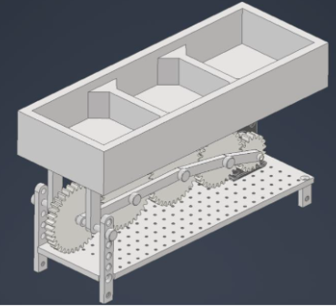

<link rel="stylesheet" href="css/styles.css">
<!-- Navigation Bar -->
     <!-- Social Media Icons -->
     <nav class="nav">
        <div class="nav-content">
            <a class="nav-item active" href="index.html">ABOUT</a> <!-- Link to the main about page -->
            <a class="nav-item" href="experience.html">EXPERIENCE</a> <!-- Link to the new Experience page -->
            <a class="nav-item" href="projects.html">PROJECTS</a> <!-- Link to projects page (if it exists) -->
        </div>
    
        <div class="social-media">
            <a href="https://www.linkedin.com/in/salih-al-tak/" target="_blank" class="social-link">
                
            </a>
            <a href="https://www.instagram.com/_salih_saad/" target="_blank" class="social-link">
                
            </a>
            <a href="mailto:salih.h.altak@gmail.com" class="social-link">
                
            </a>
        </div>
    </nav>
    

    <section class="project-details-section">
        <!-- Header Section: Project Title and Main Image -->
        <div class="header-section">
            <h1 class="project-title">Ergonomic Snow Shovel</h1>
            <div class="main-image-container">
                
            </div>
        </div>
        
    <!-- Content Section: What, How, Results -->
<div class="content-section">
    <!-- What Section -->
    <div class="content-block">
        <h2>What</h2>
        <p>Design a system for sorting and recycling containers to reduce the number of recyclable materials that are lost every year due to inadequate waste management.</p>
    </div>

    <!-- How Section -->
    <div class="content-block">
        <h2>How</h2>
        <p>
            Developed a program using python which allowed a Q arm and a Q bot to place the objects in the appropriate compartments in a simulated enviroment . Maximized the efficiency of the system by optimizing the distance travelled by both systems.
        </p>
        <p>Used Autodesk Inventor design and draw the gears and container
        </p>
    </div>

    <!-- Results Section -->
    <div class="content-block">
        <h2>Results</h2>
        <p>
            Achieved successful prototype manufacturing through the implementation of Geometric Dimensioning and Tolerancing (GD&T) principles in the technical drawings.
        </p>
        <p>
            Demonstrated superior results through the successful manufacturing and testing of the ergonomic snow shovel prototype, showcasing enhanced safety, cost effectiveness, and ergonomic benefits.
        </p>
    </div>
</div>

        <!-- Footer Section: Back to Projects Button -->
        <div class="button-container">
            <a href="projects.html" class="back-button">Back to Projects</a>
        </div>
    </section>
    